2024 Advanced Higher Biology - Paper 1 questions
Source: Scottish Qualifications Authority (SQA) / Qualifications Scotland. This is a StemInteract HTML companion, not an official HTML edition. Selectable text is supplied alongside original page images. Use the images or original PDF for equations, powers, fractions, vector notation, tables and diagrams; text extraction cannot fully preserve mathematical layout.
Jump to a question
PDF page 1
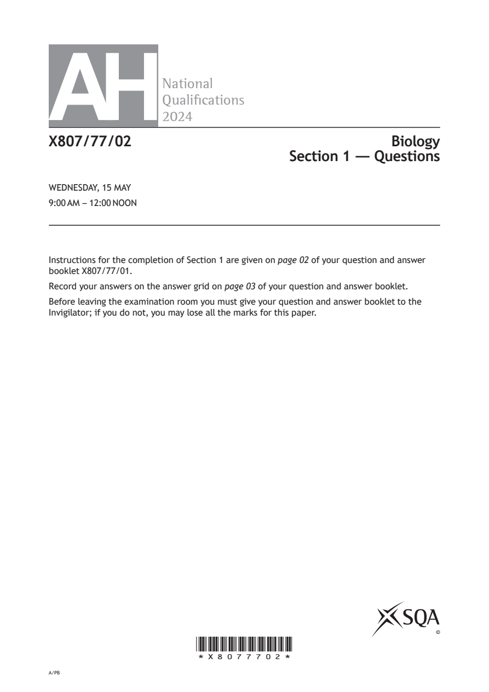
Selectable page text
AH
National
Qualications
2024
X807/77/02 Biology
Section 1 — Questions
WEDNESDAY, 15 MAY
9:00 AM – 12:00 NOON
Instructions for the completion of Section 1 are given on page 02 of your question and answer
booklet X807/77/01.
Record your answers on the answer grid on page 03 of your question and answer booklet.
Before leaving the examination room you must give your question and answer booklet to the
Invigilator; if you do not, you may lose all the marks for this paper.
©
*X8077702*
A/PBPDF page 2
Paper 1, Question 1Paper 1, Question 2Paper 1, Question 3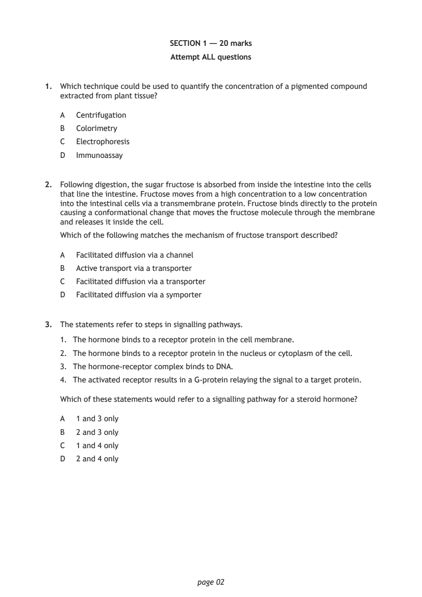
Selectable page text
SECTION 1 — 20 marks
Attempt ALL questions
1. Which technique could be used to quantify the concentration of a pigmented compound
extracted from plant tissue?
A Centrifugation
B Colorimetry
C Electrophoresis
D Immunoassay
2. Following digestion, the sugar fructose is absorbed from inside the intestine into the cells
that line the intestine. Fructose moves from a high concentration to a low concentration
into the intestinal cells via a transmembrane protein. Fructose binds directly to the protein
causing a conformational change that moves the fructose molecule through the membrane
and releases it inside the cell.
Which of the following matches the mechanism of fructose transport described?
A Facilitated diffusion via a channel
B Active transport via a transporter
C Facilitated diffusion via a transporter
D Facilitated diffusion via a symporter
3. The statements refer to steps in signalling pathways.
1. The hormone binds to a receptor protein in the cell membrane.
2. The hormone binds to a receptor protein in the nucleus or cytoplasm of the cell.
3. The hormone‑receptor complex binds to DNA.
4. The activated receptor results in a G‑protein relaying the signal to a target protein.
Which of these statements would refer to a signalling pathway for a steroid hormone?
A 1 and 3 only
B 2 and 3 only
C 1 and 4 only
D 2 and 4 only
page 02PDF page 3
Paper 1, Question 4Paper 1, Question 5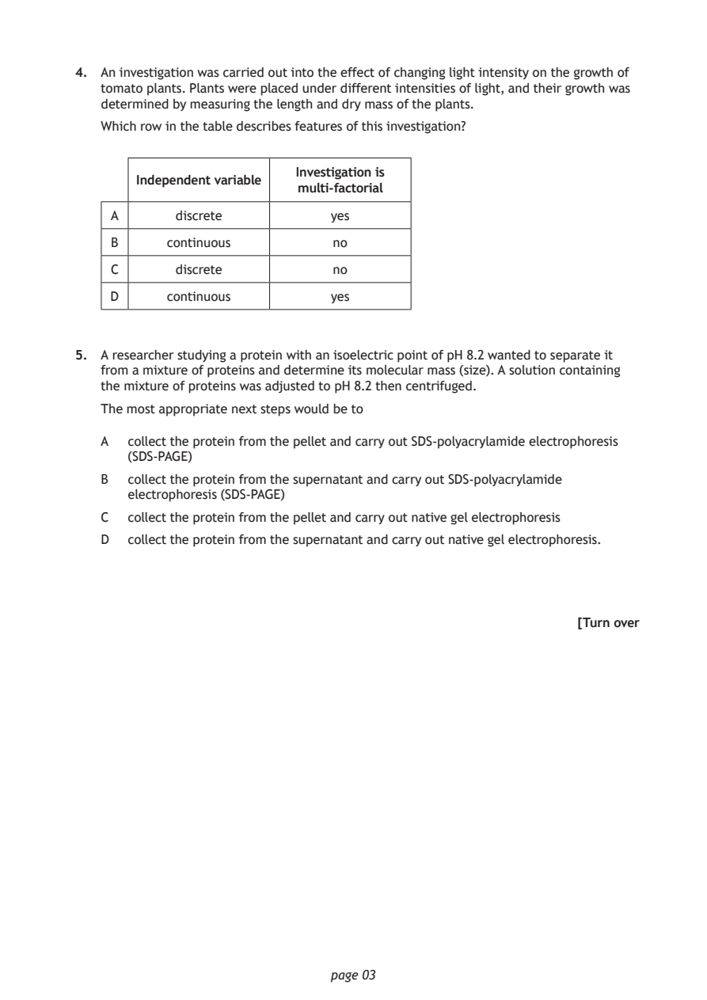
Selectable page text
4. An investigation was carried out into the effect of changing light intensity on the growth of
tomato plants. Plants were placed under different intensities of light, and their growth was
determined by measuring the length and dry mass of the plants.
Which row in the table describes features of this investigation?
Investigation is
Independent variable
multi‑factorial
A discrete yes
B continuous no
C discrete no
D continuous yes
5. A researcher studying a protein with an isoelectric point of pH 8.2 wanted to separate it
from a mixture of proteins and determine its molecular mass (size). A solution containing
the mixture of proteins was adjusted to pH 8.2 then centrifuged.
The most appropriate next steps would be to
A collect the protein from the pellet and carry out SDS‑polyacrylamide electrophoresis
(SDS‑PAGE)
B collect the protein from the supernatant and carry out SDS‑polyacrylamide
electrophoresis (SDS‑PAGE)
C collect the protein from the pellet and carry out native gel electrophoresis
D collect the protein from the supernatant and carry out native gel electrophoresis.
[Turn over
page 03PDF page 4
Paper 1, Question 6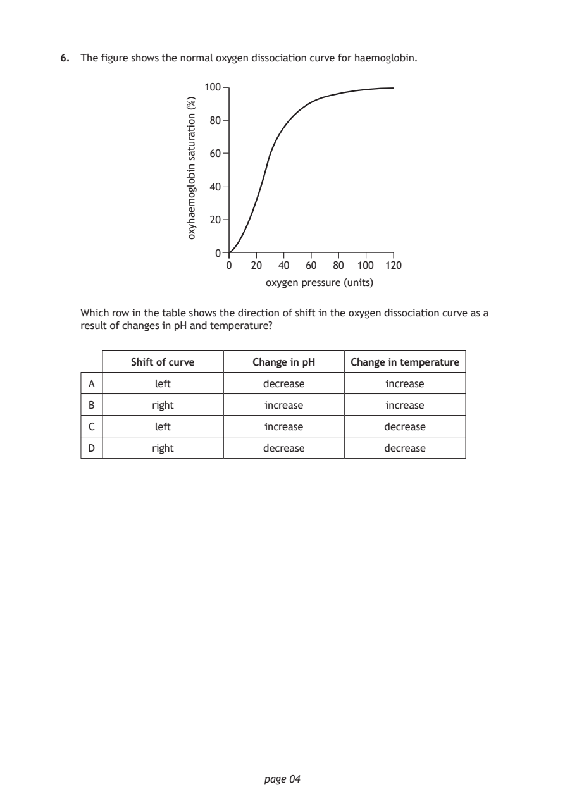
Selectable page text
6. The figure shows the normal oxygen dissociation curve for haemoglobin.
100
80
60
40
20
0
0 20 40 60 80 100 120
oxygen pressure (units)
page 04
)%(
noitarutas
nibolgomeahyxo
Which row in the table shows the direction of shift in the oxygen dissociation curve as a
result of changes in pH and temperature?
Shift of curve Change in pH Change in temperature
A left decrease increase
B right increase increase
C left increase decrease
D right decrease decreasePDF page 5
Paper 1, Question 7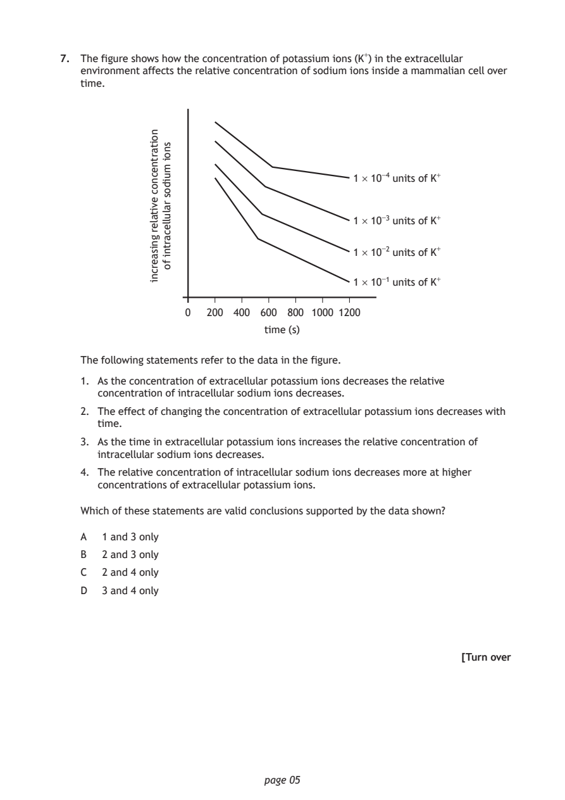
Selectable page text
7. The figure shows how the concentration of potassium ions (K⁺) in the extracellular
environment affects the relative concentration of sodium ions inside a mammalian cell over
time.
0 200 400 600
time (s)
page 05
noitartnecnoc
evitaler
gnisaercni
snoi
muidos
ralullecartni
fo
1 × 10⁻⁴ units of K⁺
1 × 10⁻³ units of K⁺
1 × 10⁻² units of K⁺
1 × 10⁻¹ units of K⁺
800 1000 1200
The following statements refer to the data in the figure.
1. As the concentration of extracellular potassium ions decreases the relative
concentration of intracellular sodium ions decreases.
2. The effect of changing the concentration of extracellular potassium ions decreases with
time.
3. As the time in extracellular potassium ions increases the relative concentration of
intracellular sodium ions decreases.
4. The relative concentration of intracellular sodium ions decreases more at higher
concentrations of extracellular potassium ions.
Which of these statements are valid conclusions supported by the data shown?
A 1 and 3 only
B 2 and 3 only
C 2 and 4 only
D 3 and 4 only
[Turn overPDF page 6
Paper 1, Question 8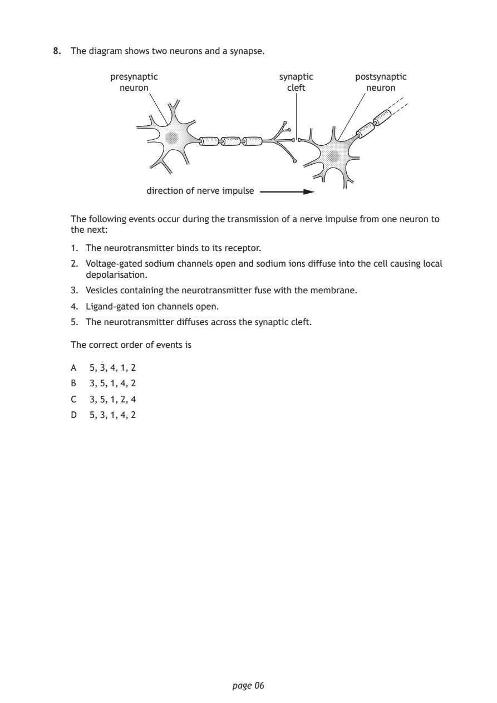
Selectable page text
8. The diagram shows two neurons and a synapse.
presynaptic synaptic postsynaptic
neuron cleft neuron
direction of nerve impulse
The following events occur during the transmission of a nerve impulse from one neuron to
the next:
1. The neurotransmitter binds to its receptor.
2. Voltage‑gated sodium channels open and sodium ions diffuse into the cell causing local
depolarisation.
3. Vesicles containing the neurotransmitter fuse with the membrane.
4. Ligand‑gated ion channels open.
5. The neurotransmitter diffuses across the synaptic cleft.
The correct order of events is
A 5, 3, 4, 1, 2
B 3, 5, 1, 4, 2
C 3, 5, 1, 2, 4
D 5, 3, 1, 4, 2
page 06PDF page 7
Paper 1, Question 9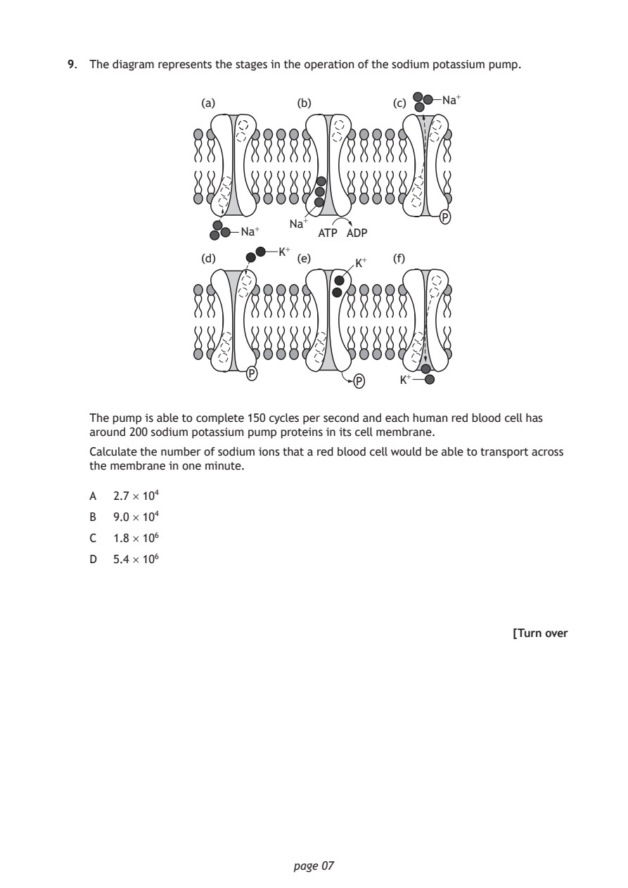
Selectable page text
9. The diagram represents the stages in the operation of the sodium potassium pump.
(a) (b) (c) Na⁺
P
Na⁺
Na⁺ ATP ADP
K⁺
(d) (e) (f)
K⁺
P
P K⁺
The pump is able to complete 150 cycles per second and each human red blood cell has
around 200 sodium potassium pump proteins in its cell membrane.
Calculate the number of sodium ions that a red blood cell would be able to transport across
the membrane in one minute.
A 2.7 × 10⁴
B 9.0 × 10⁴
C 1.8 × 10⁶
D 5.4 × 10⁶
[Turn over
page 07PDF page 8
Paper 1, Question 10Paper 1, Question 11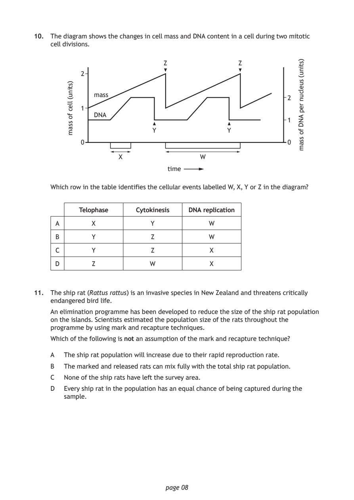
Selectable page text
10. The diagram shows the changes in cell mass and DNA content in a cell during two mitotic
cell divisions.
page 08
)stinu(
llec
fo
ssam
time
)stinu(
suelcun
rep
AND
fo
ssam
Z Z
2
mass
2
1
DNA
1
Y Y
0 0
X W
Which row in the table identifies the cellular events labelled W, X, Y or Z in the diagram?
Telophase Cytokinesis DNA replication
A X Y W
B Y Z W
C Y Z X
D Z W X
11. The ship rat (Rattus rattus) is an invasive species in New Zealand and threatens critically
endangered bird life.
An elimination programme has been developed to reduce the size of the ship rat population
on the islands. Scientists estimated the population size of the rats throughout the
programme by using mark and recapture techniques.
Which of the following is not an assumption of the mark and recapture technique?
A The ship rat population will increase due to their rapid reproduction rate.
B The marked and released rats can mix fully with the total ship rat population.
C None of the ship rats have left the survey area.
D Every ship rat in the population has an equal chance of being captured during the
sample.PDF page 9
Paper 1, Question 12Paper 1, Question 13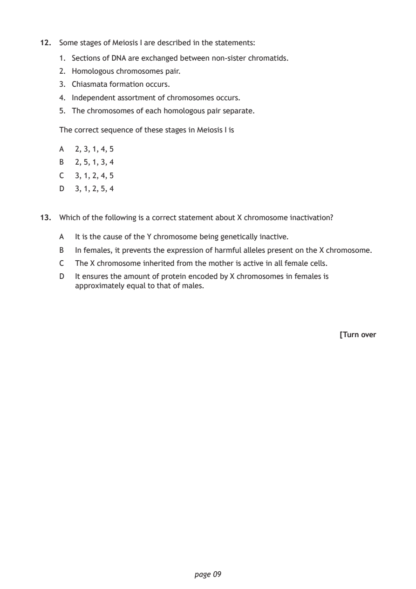
Selectable page text
12. Some stages of Meiosis I are described in the statements:
1. Sections of DNA are exchanged between non‑sister chromatids.
2. Homologous chromosomes pair.
3. Chiasmata formation occurs.
4. Independent assortment of chromosomes occurs.
5. The chromosomes of each homologous pair separate.
The correct sequence of these stages in Meiosis I is
A 2, 3, 1, 4, 5
B 2, 5, 1, 3, 4
C 3, 1, 2, 4, 5
D 3, 1, 2, 5, 4
13. Which of the following is a correct statement about X chromosome inactivation?
A It is the cause of the Y chromosome being genetically inactive.
B In females, it prevents the expression of harmful alleles present on the X chromosome.
C The X chromosome inherited from the mother is active in all female cells.
D It ensures the amount of protein encoded by X chromosomes in females is
approximately equal to that of males.
[Turn over
page 09PDF page 10
Paper 1, Question 14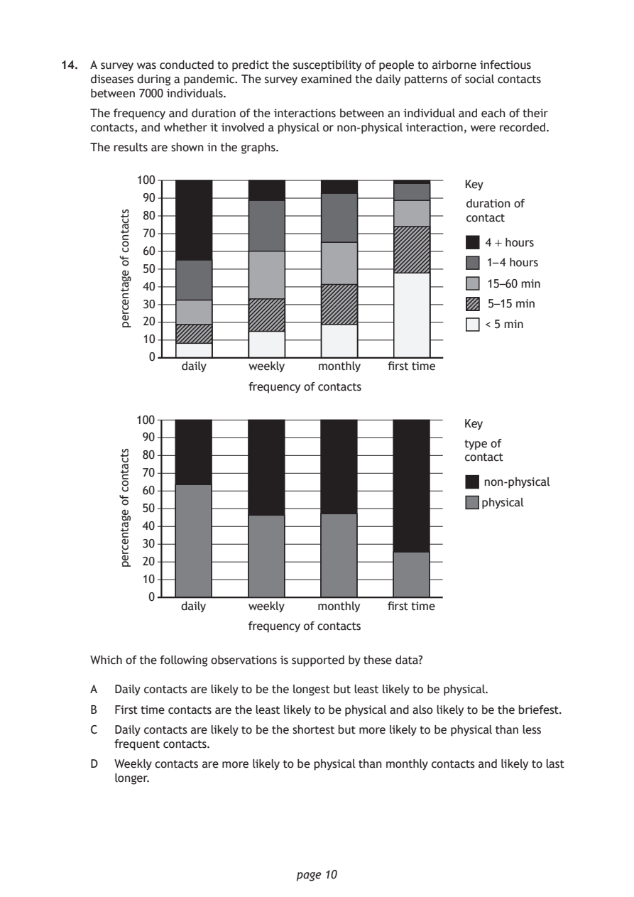
Selectable page text
14. A survey was conducted to predict the susceptibility of people to airborne infectious
diseases during a pandemic. The survey examined the daily patterns of social contacts
between 7000 individuals.
The frequency and duration of the interactions between an individual and each of their
contacts, and whether it involved a physical or non‑physical interaction, were recorded.
The results are shown in the graphs.
100
90
80
70
60
50
40
30
20
10
0
page 10
stcatnoc
fo
egatnecrep
Key
duration of
contact
4 + hours
1– 4 hours
15–60 min
5–15 min
< 5 min
daily weekly monthly first time
frequency of contacts
100
90
80
70
60
50
40
30
20
10
0
stcatnoc
fo
egatnecrep
Key
type of
contact
non-physical
physical
daily weekly monthly first time
frequency of contacts
Which of the following observations is supported by these data?
A Daily contacts are likely to be the longest but least likely to be physical.
B First time contacts are the least likely to be physical and also likely to be the briefest.
C Daily contacts are likely to be the shortest but more likely to be physical than less
frequent contacts.
D Weekly contacts are more likely to be physical than monthly contacts and likely to last
longer.PDF page 11
Paper 1, Question 15Paper 1, Question 16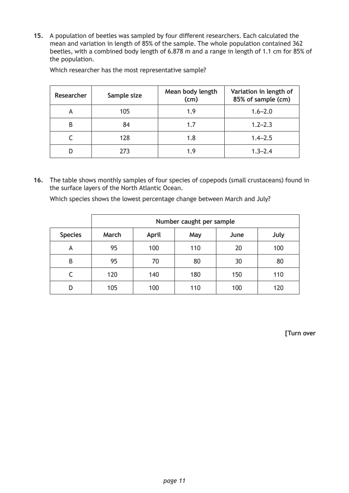
Selectable page text
15. A population of beetles was sampled by four different researchers. Each calculated the
mean and variation in length of 85% of the sample. The whole population contained 362
beetles, with a combined body length of 6.878 m and a range in length of 1.1 cm for 85% of
the population.
Which researcher has the most representative sample?
Mean body length Variation in length of
Researcher Sample size
(cm) 85% of sample (cm)
A 105 1.9 1.6 –2.0
B 84 1.7 1.2–2.3
C 128 1.8 1.4 –2.5
D 273 1.9 1.3–2.4
16. The table shows monthly samples of four species of copepods (small crustaceans) found in
the surface layers of the North Atlantic Ocean.
Which species shows the lowest percentage change between March and July?
Number caught per sample
Species March April May June July
A 95 100 110 20 100
B 95 70 80 30 80
C 120 140 180 150 110
D 105 100 110 100 120
[Turn over
page 11PDF page 12
Paper 1, Question 17Paper 1, Question 18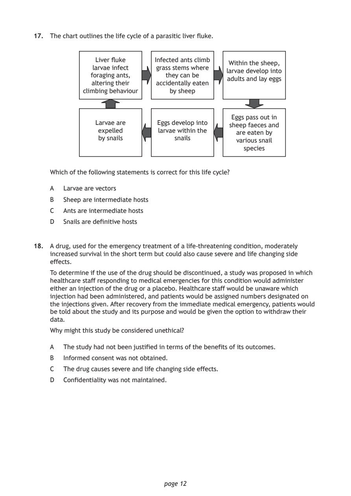
Selectable page text
17. The chart outlines the life cycle of a parasitic liver fluke.
Liver fluke Infected ants climb
Within the sheep,
larvae infect grass stems where
larvae develop into
foraging ants, they can be
adults and lay eggs
altering their accidentally eaten
climbing behaviour by sheep
Eggs pass out in
Larvae are Eggs develop into
sheep faeces and
expelled larvae within the
are eaten by
by snails snails
various snail
species
Which of the following statements is correct for this life cycle?
A Larvae are vectors
B Sheep are intermediate hosts
C Ants are intermediate hosts
D Snails are definitive hosts
18. A drug, used for the emergency treatment of a life‑threatening condition, moderately
increased survival in the short term but could also cause severe and life changing side
effects.
To determine if the use of the drug should be discontinued, a study was proposed in which
healthcare staff responding to medical emergencies for this condition would administer
either an injection of the drug or a placebo. Healthcare staff would be unaware which
injection had been administered, and patients would be assigned numbers designated on
the injections given. After recovery from the immediate medical emergency, patients would
be told about the study and its purpose and would be given the option to withdraw their
data.
Why might this study be considered unethical?
A The study had not been justified in terms of the benefits of its outcomes.
B Informed consent was not obtained.
C The drug causes severe and life changing side effects.
D Confidentiality was not maintained.
page 12PDF page 13
Paper 1, Question 19Paper 1, Question 20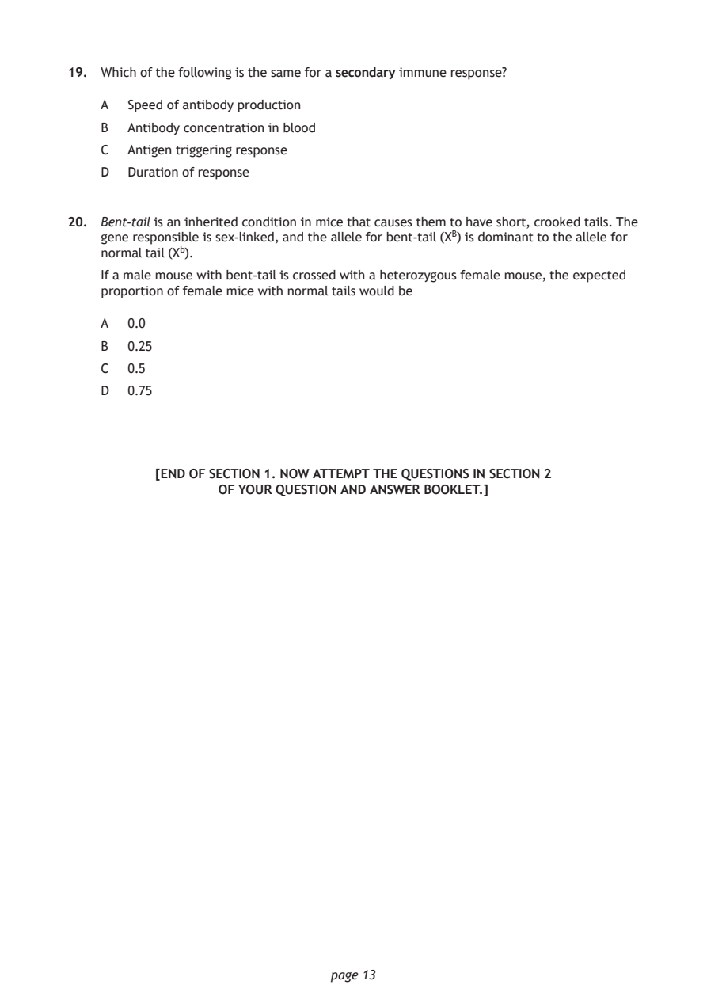
Selectable page text
19. Which of the following is the same for a secondary immune response?
A Speed of antibody production
B Antibody concentration in blood
C Antigen triggering response
D Duration of response
20. Bent‑tail is an inherited condition in mice that causes them to have short, crooked tails. The
gene responsible is sex‑linked, and the allele for bent‑tail (X^{B}) is dominant to the allele for
normal tail (X^{b}).
If a male mouse with bent‑tail is crossed with a heterozygous female mouse, the expected
proportion of female mice with normal tails would be
A 0.0
B 0.25
C 0.5
D 0.75
[END OF SECTION 1. NOW ATTEMPT THE QUESTIONS IN SECTION 2
OF YOUR QUESTION AND ANSWER BOOKLET.]
page 13PDF page 14
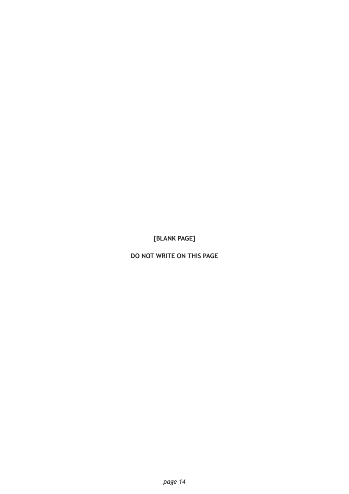
Selectable page text
[BLANK PAGE]
DO NOT WRITE ON THIS PAGE
page 14PDF page 15

Selectable page text
[BLANK PAGE]
DO NOT WRITE ON THIS PAGE
page 15PDF page 16

Selectable page text
[BLANK PAGE]
DO NOT WRITE ON THIS PAGE
page 16